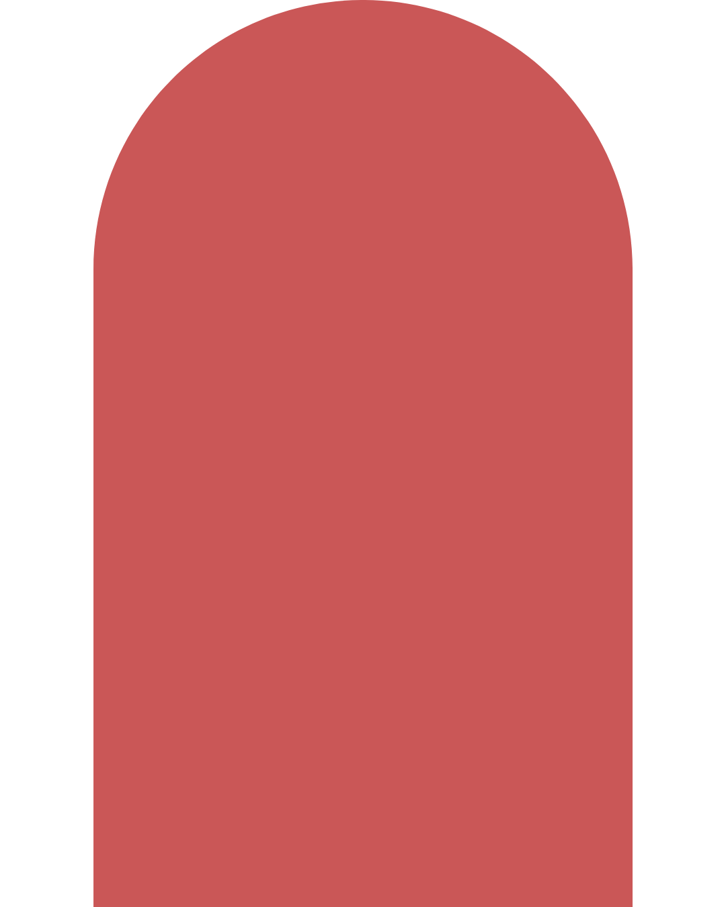

Reducir la fricción para que el primer paso sea más fácil.

Sobre los costos
No. El trabajo de análisis de tu caso y la derivación son sin costo. Solo abonás las sesiones con tu terapeuta asignado, una vez que empezás el proceso.
Sí. Contamos con profesionales principiantes que atienden con aranceles diferenciados, bajo la supervisión directa de nuestra coordinación. Si es tu caso, podés mencionarlo en el formulario y lo tenemos en cuenta en la derivación. La tarifa mínima en Argentina es de $20.000 por sesión.
No, trabajamos de forma particular. Sin embargo, emitimos la factura correspondiente para que puedas gestionar el reintegro con tu cobertura médica si la tenés.
Sobre la atención
Ambas opciones son posibles. Contamos con profesionales que atienden de forma presencial en Buenos Aires y diversas zonas de Argentina, y ofrecemos atención virtual para todo el país y el exterior. Podés indicar tu preferencia en el formulario.
Nuestra red incluye perfiles formados en distintos enfoques, como: psicoanálisis, terapia cognitivo-conductual, psiquiatría, orientación vocacional y evaluaciones psicodiagnósticas, entre otras. En el formulario podés indicar si tenés alguna preferencia.
Sí. En el formulario de consulta podés indicar tu preferencia por el género del terapeuta (mujer, varón, indistinto) y por la franja etaria (25–35 años, 35–50 años, +50 años, o indistinta). Tenemos en cuenta estas preferencias en la derivación.
Sobre el proceso
Nos contactamos a través de WhatsApp en menos de 24 horas hábiles para confirmar tu solicitud y orientarte. Una vez que coordinas con el profesional, es él o ella quien define el día y horario de inicio.
Evaluamos la situación y, si es necesario, pensamos en una nueva derivación. El objetivo es que tu proceso pueda iniciarse y sostenerse. Sabemos que el comienzo de un proceso puede requerir ajustes y lo acompañamos.
Absolutamente. Todos los datos que nos brindes serán leídos exclusivamente por el equipo de coordinación clínica y tratados con total confidencialidad para orientar tu derivación. Nada circula por fuera de ese espacio.
No. No hace falta estar en una crisis para consultar. A veces sentís que algo se repite o simplemente sabés que algo no está bien, aunque todavía cueste ponerlo en palabras. Ese también es un buen momento para empezar.
Para profesionales
Podés completar el formulario de postulación en la sección Profesionales. Evaluamos cada postulación de forma individual y nos contactamos a la brevedad para continuar el proceso.
Proponemos espacios de formación, supervisión e intercambio clínico. Para jóvenes profesionales, contamos con un espacio de inserción supervisada con derivaciones acordes a la etapa formativa y acompañamiento del equipo de coordinación.
¿Quedó alguna duda?
Podés empezar el proceso o contactarnos directamente.